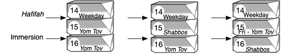
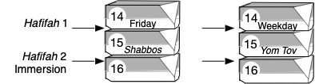
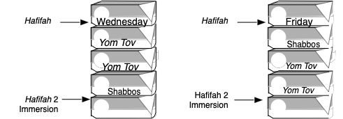

Often, books address the subject of preparing for immersion exclusively to the wife. Of course, there are a considerable number of details and responsibilities.
It is precisely for this reason that some attention ought to be directed to the husband.
His role, in truth, can be summed up in one word: consideration—at a time that both requires and deserves it.
Assistance and Support
If her preparation is performed at home, preventing household distractions can help avert potential stress. She requires uninterrupted, quiet time to prepare in a composed manner. Young children demanding attention are an untimely diversion, and the husband should attend to their needs more than usual. This may involve keeping them occupied or taking them out of the house.
He must also keep in mind that immersion itself should remain private, even from family. If the preparations are done at the , the husband should ensure she has proper transportation. If he drives her, he should again keep their destination private, and make arrangements to keep the children occupied.
Two goals are accomplished by his consideration:
- First, the practical: the wife requires calm, undisturbed time to prepare in a tranquil manner.
- Second, the emotional: the message conveyed is that her efforts are important to him. She, too, has been waiting for this evening. She carries emotions beyond the many halachic responsibilities that precede immersion.
Privacy
In addition to the husband’s collaboration in keeping this night confidential from their family, he should also be alert and resourceful regarding others. A common scenario that highlights this need is when immersion falls on Friday night. Forethought may help to prevent guests from becoming aware of this fact.
To the Wife
Experience shows that, for some women, preparing for immersion can be accompanied by emotional stress. Too often, they over-trim their nails or become overly anxious about removing scabs, sometimes causing more harm than good.
Try to avoid this.
Second Doubts
Understandably, it is important to review this chapter and do one’s best to clean and remove all intervening issues.
However, after doing so, one should rest assured that, with Hashem’s help, the proper outcome has been achieved: “One who comes to purify himself is helped from Above,” Shabbat 104:a.
If you have any questions regarding the treatment of dry skin, scabs, or anything else, ask the mikvah-attendant. Most likely, she is in constant communication with the supervising Rabbi. Unnecessary doubts can often be avoided by simply asking a question at the appropriate time.
Free your mind of all external worries while preparing for immersion. Proper preparation is an essential element in the purification process. And, like all mitzvot, it should be done calmly, with sincere contentment and joy. “The Divine Presence rests only through the joy of a mitzvah1Shabbat 30:b..”
In preparation for immersion, she washes her entire body and hair in warm water and carefully checks for any intervening issues.
Mehaber 199:1
Overview
Before immersion in the mikvah, the entire body and hair are carefully washed and examined to ensure that no intervening substances or other issues that could invalidate the immersion are present.
Wording. Germane to this subject is the term hafifah2The Hebrew word hafifah (חפיפה) translates narrowly as “washing” or “shampooing.” In this context, however, hafifah functions as a comprehensive term encompassing all aspects of preparation for immersion, including washing, shampooing, trimming the nails, examining callouses, visually inspecting for intervening issues, physically feeling for intervening issues, waxing leg hairs, and removing jewelry., which encompasses the entire preparation process. Every stage and action undertaken in readiness for immersion can be considered part of the hafifah process.
This book strives to use only everyday English. However, beyond phrases such as “preparation for immersion” or “preparing to immerse,” when brevity benefits clarity, this chapter occasionally employs the word hafifah.
Background & Framework
Source. In these verses, purification is linked to sunset: “And he shall not eat any sacred offering until he has immersed in a mikvah. At sunset he becomes ritually clean3Leviticus 22:6, 7..”
The sages4Taz 198:1, “The sages extrapolated, ‘He immersed… at sunset.’ Just as sunset is a fixed moment, so too must immersion be performed in a single, continuous act.” See Beis Yosef beginning of 198. The Beer Hagolah on Mehaber 198:1 cites (Medrash) Torat Cohanim, Parshah Emor 4:7: “‘Until he has immersed:’ would immersion limb by limb suffice? No, as indicated by the next verse, ‘At sunset he becomes ritually clean.’ Just as sunset marks a specific moment, so too must complete submersion occur at once.” explained that these verses establish a condition of immersion. Just as the sun setting marks a specific moment, so too must immersion be completed at one specific moment.
In other words, the person in their entirety must be completely submerged all at once5Mehaber 198:1. Therefore, removing an intervening substance and immersing only that part of the body again does not suffice, since the entire body must be submerged all at once, see Beis Yosef beginning of 198. See Sidrei Tahara 198:1.. Even one hair6Mehaber 198:27. “A man who has had a seminal discharge shall surely immerse all his flesh in water and remain unclean until evening”(Leviticus 15:16).’ The word ‘surely’ comes to include what is accessory to his flesh, specifically the hair,” Eruvim 4:b. not submerged invalidates the immersion7This invalidates immersion at a biblical level, Sidrei Tahara 189:1 cited in Badei Hashulchan 198:1. “At a biblical level,” Tzemach Tzedek Yoreh De’ah 158:1 based on Shulchan Aruch Admur Hazoken Tikunei Mikvaot..
Furthermore, there must not be any intervening issues, such as dirt, dry dough, knotted hair, lice, tangled hair, jewelry, or bandages during immersion.
Biblical Requirement. The biblical requirement8Baba Kama 82:a. is to visually inspect oneself for any obstruction that would prevent the mikvah water9Mehaber 199:8. from coming into contact with the body. The parts of the body not visible to the eye are checked by feeling with the hand10Taz 199:4. Badei Hashulchan 199:1..
Body Cavities11Hebrew, beis hastorim. “For example, the mouth, nostrils, ear canals and vagina (rechem),” mishnah (yachin) Mikvaot end of chapter 8, Badei Hashulchan 199:1. “… body cavities, which do not need to touch the mikvah water, must be clean and fit for contact,” Mehaber 198:43.. The mouth12Mehaber 198:24.“Clean the teeth: They need not come into contact with the water. This is inferred from ‘… all his flesh’ (Leviticus 15:16). Only external areas, similar to the flesh, must make contact with the water. However, the teeth must be clean of intervening issues, and thus fit for contact,” Taz 198:24., nostrils, ear canals13Rosh on Mikvaot end chapter 8; Sharei Dura 14; Ramo 198:43, Taz 198:1. and private area14Sharei Dura, Hilchot Niddah 14. (vagina) do not need to actually come into contact with the mikvah water.
However, they must be clean of intervening issues and thus fit to touch the mikvah water15The verse, “A man who has had a seminal discharge shall surely immerse all his flesh in water and remain unclean until evening” (Leviticus 15:16), indicates that only the external part of the body—the skin—must come into contact with the mikvah water, not enclosed or hidden parts such as the mouth, nose and vagina (Kiddushin 25:a, Mehaber 198:38). These latter areas must, however, be free from intervening substances and fit to come into contact with the mikvah water (Niddah 66:b).
One explanation traces this requirement to the seemingly superfluous word “entire” in the verse; that term implies an additional requirement—that enclosed or hidden parts must be free from intervening issues.
Another explanation attributes it to rabbinic legislation intended to minimize differentiation between the external (skin) and internal parts of the body. This prevents the mistaken assumption that just as the enclosed parts of the body (e.g., the teeth) need not be free of intervening issues, so too the external parts, see Badei Hashulchan 198:176 and Tziyonim..
Ezra’s Directive. Ezra the Scribe, in his campaign to strengthen Torah observance in his generation16Upon returning from the Babylonian exile (457 BCE) and discovering the plight of religious observance., decreed17Baba Kama 82:a; Ramban, Hilchot Niddah, chapter 9. that women must perform hafifah, a meticulous washing18Some opinions maintain that this directive required combing or fluffing all the hair on the body (Shach 199:1); others maintain that it required washing in water specifically (Ramban, Hilchot Niddah, chapter 9, Mehaber 199:1); and still others maintain that a comb was required (Yerushalmi, Megillah 4:1; Rashi, Baba Kama 82:b). and inspection in preparation for immersion in the mikvah.
This chapter addresses preparing the body and hair before immersion. The following chapter discusses issues found on the body or hair after immersion.
Heedfulness On The Day of Immersion
Eating. The following should not be eaten from the morning19Even from the morning of a long summer day, Darchei Teshuva 198:80. of the day preceding immersion in the mikvah:
- Meat20Since meat becomes lodged between the teeth more than other foods and is considered an intervening substance, Mehaber 198:24. See Taz Yoreh De’ah 89:1., including liver and poultry21Darchei Teshuva 198:78., whether whole or ground22Shiurei Shevet HaLevy on Mehaber 198:24. (meat soup is permissible)
- Corn or popcorn
- Oranges
These, and similar foods, which tend to leave pieces stuck between the teeth, should be avoided on the day preceding the evening of her immersion in the mikvah23Shiurei Shevet HaLevy on Mehaber 198:24; see Tahara Kehalacha 19:35..
She must refrain from eating the above even if this may reveal to others that she is immersing that evening24Shiurei Shevet HaLevy on Mehaber 198:48..
If a woman did eat one of the above, the immersion is not postponed25Taz 198:25. Darchei Tahara 198:79.. However, special care must be taken to ensure that nothing remains stuck between the teeth.
Fish is permitted26Shiurei Shevet HaLevy on 198:24.. A dish cooked with meat, such as chicken soup, is also permitted27Darchei Teshuva 198:78..
Special Meals. When Shabbat, Yom Tov28Taz 198:25., chol hamoed29Shulchan Aruch Admur Hazoken 529:7, Tahara Kehalacha 19:33, Shiurei Shevet HaLevy on Mehaber 198:24. (the intermediate days of Pesach and Sukkot,) Purim30Rambam, Hilchot Megillah 2:15; Mehaber 696:7, Tahara Kehalacha 19:33, Shiurei Shevet HaLevy on Mehaber 198:24. Note, however, Likkutei Sichos, vol. 11, p. 336, footnote 5., or a meal considered for her a festive meal31Seudas mitzvah, Shiurei Shevet HaLevy on 198:24. falls on the day of immersion, meat may be eaten. Extra caution must be exercised, however, during hafifah while cleaning the teeth32Taz 198:25..
If health or nourishment requirements dictate, she may eat meat on the day preceding immersion33Shiurei Shevet HaLevy on 198:24.. In that event, additional attention is necessary while cleaning the teeth.
Kneading Dough/Sticky Substances. She should also avoid touching sticky substances, such as dough or wax, from the morning on the day preceding the immersion34Ramo 198:24. Or clay, grease, paints, poskim..
Women who regularly knead dough to bake challah or cake in honor of Shabbat may do so even if it falls on the day preceding their mikvah35Sidrei Tahara 198:49.. In such cases, however, they should be especially careful to clean their hands and fingernails.
Between Preparation, Hafifah, and Immersion. She should not eat anything between preparation, , and immersion36Ramo 198:24. This refers to the final hafifah prior to immersion—for example, when she performed hafifah on Friday and then again on Saturday night before immersion..
Drinking liquids that contain no solid pieces37Tahara Kehalacha 18:16. is permitted38Shiurei Shevet HaLevy on Ramo 198:24. Badei Hashulchan 198:188.. She should, however, rinse her mouth with water after drinking other beverages39Badei Hashulchan 198:189, see Darchei Teshuva 198:83..
After hafifah40Indeed, she is to exercise caution throughout the entire day, Ramo 198:24., she should be careful not to come into contact with dirt or sticky substances41Ramo 199:6, Shach 199:11..
How To Prepare For Immersion
Bathtub. Using a bathtub42Badei Hashulchan 199:17. has become accepted as an integral part of the hafifah process. This is ideal, as a bath is effective in softening and removing dirt.
However, if a bathtub is unavailable or unsuitable43Examples might include a wife with a large frame who is uncomfortable in a narrow bathtub, or wives during pregnancy to prevent potential infection, where a bathtub may pose concerns of discomfort or hygiene, Badei Hashulchan 199:17., a shower suffices44Mehaber 199:1, “rinses.” “When available.... ” “If a bathtub is not available, however, a thorough warm shower is permitted,” Gefen Porioh 5:25, Badei Hashulchan 199:17. A bathtub’s necessity is not mentioned in Kitzur Dinei Tahara or in Shiurei Shevet HaLevy. Nonetheless, the use of bathtubs has become widespread custom..
Some poskim note that a pregnant woman may avoid45“Pregnant women should exercise caution with hot baths, to prevent potential harm to the fetus; instead, they should use a shower in preparation for immersion in the mikvah,” Shiurei Shevet HaLevy on Mehaber 199:1. Note, “Pregnant women should refrain from prolonged sitting in a hot bathtub,” Shiurei Shevet HaLevy on Mehaber 199:3. using hot water in a bathtub, in consideration of the embryo’s health and therefore perform hafifah in a shower46Shiurei Shevet HaLevy on 199:1..
Washing. The entire body should be washed and scrubbed47Darchei Teshuva 199:7, Sidrei Tahara 199:9, poskim. thoroughly with soap48Even aromatic, Shiurei Shevet HaLevy on Mehaber 199:2. to remove any dirt or external substances. Extra attention should be given to hard-to-reach or hard-to-clean substances, such as, perspiration buildup49Mehaber 199:1, “... scrub the underarm area....”.
Areas between the thighs and toes, the navel, armpits50Mehaber 199:1., under the breasts, and between folds of skin should all be thoroughly washed51Taz 199:1. Bach beginning of 199, poskim. The inside of the ears and nose should be cleaned as thoroughly as possible, while exercising appropriate caution..
Nursing mothers should check their nipples for dried milk.
While washing, the body and hair should be checked thoroughly for dirt or intervening substances52Shach 199:11. and the hair should be untangled.
Water. Ideally, comfortably hot53As normally used while showering. If this is unavailable, lukewarm water suffices, Badei Hashulchan 199:20. Shiurei Shevet HaLevy on 199:2. water54Mehaber 199:1, 2. should be used for cleansing the entire body, especially the hair55Mehaber 199:2..
- If only lukewarm water is available, it may be used, but care must be taken to ensure the hair does not become tangled56Shiurei Shevet HaLevy on Mehaber 199:2..
- If only a limited amount of hot water is available, the hair takes precedence over the rest of the body57Mehaber 199:2.
Note the distinction between “… rinsing the entire body and hair should be in hot water….” and “Rinsing the hair may not be with cold water….” (Mehaber 199:1, 2).. Cold water tends to harden the hair, making it less manageable and more difficult to untangle58Rambam cited in Bach, Sidrei Tahara 199:28., and it does not clean as effectively59Rashi Niddah 66:b..
Solar-heated water may be used if it has reached the necessary temperature60Mehaber 199:2..
Bathroom. It is best for the wife to relieve herself before immersing in the mikvah61Ramo 198:43.. This prevents the need to hold herself in while immersing, which could interfere with the mikvah water coming into contact with those parts of her body. Afterward, she should carefully clean the relevant areas.
If she did not go to the bathroom, her immersion is still valid62Shach 198:55. Sidrei Tahara 198:83..
After walking barefoot from the shower to the mikvah, she should check the soles of her feet to ensure no dirt is stuck to them and rinse them if necessary63Mehaber 198:45.. Where available, disposable slippers supplied by the mikvah for this walk can help minimize this concern.
Nails
The fingernails and toenails64Shach 198:25, Badei Hashulchan 198:137. should be trimmed65Mehaber 198:18, Ramo 198:20. A woman who wishes to observe the laws of purity but refuses to trim her nails before immersion should be gently encouraged to follow the custom, as even post facto this involves an element of prohibition (Ramo 198:20).
If her refusal may ultimately prevent her from immersing, the Achiezer (Part III, siman 33) allows leniency. In conclusion, he writes: ‘Since I did not find an explicit allowance in the writings of later poskim, and out of concern lest a breach result from this, one should not issue a clear ruling of leniency. Rather, the instruction in the mikvah should be not to prevent women who refuse to remove nails that have been manicured.’
Of course, they must carefully clean beneath their nails to remove any dirt or possible concern of intervening issues (summary of Biurim in Badei Hashulchan on Mehaber 198:18.) and cleaned.
- It is not necessary to cut them below the skin line where they meet the flesh66Chochmat Adam (klal 119, sif 12) cited in Shiurei Shevet HaLevy on Mehaber 198:18 and in Badei Hashulchan 198:134.. It is preferable to trim them with a nail clipper or scissors rather than by hand or biting, since the latter does not trim cleanly67Mehaber 390:7..
- A woman with long, manicured fingernails, may suffice by cleaning them thoroughly if cutting them would deter her from immersing68Badei Hashulchan on Mehaber 198:18 in Beorim. Shiurei Shevet HaLevy on Mehaber 198:20. Tahara Kehalacha 19:44. So too, after the fact, a woman may immerse with false nails if requiring their removal would deter her from immersing, Tahara Kehalacha 19:44..
- It is halachically preferable to remove all nail polish and gel laquer, even if they are intact and not chipped69Shiurei Shevet HaLevy on Mehaber 198:17., and this is the prevailing custom.If they cannot be removed and are fully intact, the immersion is not postponed70Mehaber 187:17. “For women who customarily color their hands (i.e., their fingernails) for adornment or similar purposes, such color is not deemed an intervening substance,” Shulchan Aruch Admur Hazoken, Orach Chaim, 162:5..If the polish is incomplete, it must be removed71See Shiurei Shevet HaLevy on Mehaber 198:17.. Special care should be taken to avoid overlooking small areas.
- She need not cut an ingrown toenail which is being corrected with cotton placed beneath it. However, the cotton must be removed before immersing72Tahara Kehalacha 19:31..
- A nail partially torn across its width should be cut73Mehaber 198:21. Badei Hashulchan 198:157. If she immersed without doing so, see Chapter Eight..
- If her finger is swollen over the end of the nail so that the nail cannot be cut or cleaned, and no dirt is visible due to the swelling, she is permitted to immerse74Mehaber 198:19. Shach 198:24. Gefen Porioh 5:5,c..
- Skin peeling around the fingernails should be cut as comfortably as possible, small remaining pieces do not adversely affect immersion75Tahara Kehalacha 20:102..
Jewelry/Other Items
She should remove all extraneous items from her body and hair76“Ideally, she should remove all items from her body, even those so loose that they do not prevent the water from touching her flesh. This stringency is intended to preclude immersing with items that may, in fact, constitute an intervening substance,” Ramo 198:1., including earrings, rings, necklaces, bracelets, contact lenses77All types should be removed, Shiurei Shevet HaLevy on Mehaber 198:7., and similar items. This applies even if they are loose78“We cannot distinguish between loose (and snug) rings,” Ramo, Orach Chaim 161:3, Shulchan Aruch Admur Hazoken 161:7. and allow water to come into contact with her skin79Ramo 198:1, Shiurei Tahara 198:6..
Difficulty Removing. Any difficulty in removing jewelry should be resolved beforehand, including, if necessary, requesting the assistance of a jeweler80Shiurei Shevet HaLevy on Mehaber 198:23..
If her mikvah night has arrived and she has still not been able to remove a piece of jewelry81These principles apply to regular earrings attached to the lobe, as well as to those attached to the upper part of the ear, often referred to as cartilage piercings. Particular attention should be given to tight-fitting ear cuffs., immersion is permissible as long as it is loose82Mehaber 198:23. to allow water to reach skin beneath it83Chochmat Adam cited in Badei Hashulchan 198:169.
Definitions include:
• “Loose” is defined according to the specific circumstance. In particular, if it appears loose enough to allow water to seep between it and the flesh, it is not considered an intervening substance.
• For example, a ring that is so loose that it can be easily spun around the finger does not intervene; likewise, if a throwing motion would cause it to fly off the finger, it does not intervene. See additional sources cited in Badei Hashulchan 189:169.
“One should ideally adopt the stricter view, as we are unable to discern between a snug and loose ring,” Ramo, Orach Chaim 161:3.
“After the fact, it is valid,” see Mehaber 198:23,” Magen Avraham, Orach Chaim 161:10..
If a ring or other jewelry cannot be removed, a rabbi should be consulted84See Shulchan Aruch Admur Hazoken 161:7. See Shiurei Shevet HaLevy on Mehaber 198:23. Note Sidrei Tahara 198:88..
Hair
Soaps, Shampoos. It is halachically preferable to use soaps and shampoos85Shach 199:3. Kitzur Dinei Tahara 5:2. during hafifah. Conditioner may also be used86Tahara Kehalacha 19:13. See Darchei Tahara Chapter Fifteen..
Afterwards, the wife should ensure that all shampoo, conditioner and soap are completely rinsed from her hair87Darchei Teshuva 199:13, since, according to the Mehaber (199:2), some substances tangle the hair, perhaps this shampoo or soap contains these.. She should be especially careful that no residue remains. Soap or shampoo that leaves an aroma is permitted88Shiurei Shevet HaLevy on Mehaber 199:2..
Any material which causes the hair to knot, snarl, or tangle should not be used89Mehaber 199:2.. However, if she did use such a product and checked to ensure the hair was not snarled or knotted, she may immerse90Ramo 199:2..
Hair, Eyebrow, Eyelash Dye. Hair dye absorbed into the shaft91Shach 198:21. and fully complete does not need to be removed92Mehaber 198:17, Shiurei Shevet HaLevy on Mehaber, Darchei Tahara p. 151, Gefen Porioh 5:4. In previous generations, some women avoided dyeing their hair, thereby precluding halachic uncertainties, Shiurei Shevet HaLevy on Mehaber 198:17..
If the dye has deteriorated to the point that it has become undesirable to her, it should preferably be removed or redone. If removal or reapplication is impossible or extraordinarily difficult, she may immerse93Tahara Kehalacha 19:46..
If there is substance to the dye on the hairs that has not been absorbed into the shafts, that should be washed and combed out.
Combing, Fluffing. The hair on the head should be combed during shampooing94Mehaber 199:1., paying special attention to undo all knots95Mehaber 199:1.. This should be done with a comb; fingers do not suffice unless she cannot repeat hafifah, marital relations have already occurred, or a comb cannot be found96Sidrei Tahara 199.. In such cases, she should fluff the hair thoroughly with her fingers.
In addition to being washed, hair in the armpits and private place should be fluffed with the fingers to remove knots97Fluffing suffices to remove knots in those places, Shach 199:1.. Ideally, the eyebrows should also be fluffed98Shach 199:1..
If she does not remember combing her hair, but is certain she had a comb with her and performed the other elements of hafifah, her hafifah is valid99Shiurei Shevet HaLevy on 199:1..
Dandruff. Dandruff should be treated normally while showering. Larger flakes should be removed, and her head shampooed and rinsed100At the rabbinic level, anything she is particular about removing is considered an intervening substance. Her normal practice in this regard demonstrates her satisfaction, Shiurei Shevet HaLevy on 198:22..
If most of her scalp is covered with dandruff, a rabbi knowledgeable should be consulted101Since some poskim maintain that the majority of the scalp has the same status as the majority of the body, and something which covers the majority of the body invalidates the immersion at a rabbinic level even if she is not particular about it, as detailed in the following chapter..
Shabbat/Yom Tov. On Shabbat or Yom Tov, it is permissible for the wife to remove flakes of dandruff from her hair with her fingers.
She should be cautious about removing flakes still attached to her scalp102Shemirat Shabbat Kehilchata 14:49..
Lice. She should make an effort to remove lice or lice eggs from her hair and scalp, including combing with a fine comb, rinsing with hot water, and extracting them with the fingernails103Mehaber 198:47.. If possible, she should even get a haircut, though that is not required104Shiurei Shevet HaLevy on Mehaber 198:47..
If, after making her best efforts, some lice or eggs remain, her hafifah is still valid and she may immerse105Mehaber 198:47, Shiurei Shevet HaLevy. Note Pischei Teshuva 198:25 and Sidrei Tahara 198:88..
Haircut. It is best not to have a haircut on the day of immersion, and ideally not during the three days prior.
However, even a haircut on the day of the mikvah does not cause postponement of immersion. In such a case, she should be very careful to rinse off all leftover hair106Tahara Kehalacha 19:73..
Teeth
The teeth should be107This is obligatory, Shach 198:30. cleaned108Mehaber 198:24. thoroughly by brushing and using toothpicks109Shiurei Shevet HaLevy on Mehaber 198:24. or dental floss110Kitzur Dinei Tahara 5:4.. Non-waxed dental floss is preferable if available. She should take care that the floss does not break. If it breaks and part remains stuck between her teeth, it must be removed111Mehaber 198:24, Shiurei Shevet HaLevy on Mehaber 198:24.. If it cannot be removed, a rabbi should be consulted112Since this is a case where she, or other women in general, are particular, as explained in the beginning of the next chapter..
She may not rely on checking her teeth after immersing113Shach 198:30. in the mikvah.
Additionally, she must rinse her mouth thoroughly114Badei Hashulchan 198:178..
Food, stuck between the teeth and not visible, which cannot be removed due to swollen gums, does not intervene and she may immerse115Tahara Kehilchata, halacha 119..
Loose Tooth. A loose tooth does not intervene, and she may immerse with it116Tahara Kehilchata, halacha 120..
If she has already decided to remove the tooth in the near future, a rabbi should be consulted117A tooth that is so loose that it has become unusable does not constitute a chatzitza (an intervening substance or issue that prevents the mikvah water from making direct contact with the body or hair, potentially invalidating the immersion) as long as she has not decided that it will be removed. However, once she has decided that it will be removed—such as following a dentist’s instruction—then even if the tooth still serves some function, it does constitute a chatzitza; see Badei Hashulchan 198:162; Shiurei Shevet HaLevy on Mehaber 198:22.
Other poskim maintain that even if the decision has been made to remove it, it does not constitute a chatzitza; see sources cited in Tahara Kehilchata, footnotes to halacha 120..
Stitches. Self-dissolving stitches in the gums after an operation, even if partly exposed, do not adversely affect immersion118Badei Hashulchan (Beorim) on Mehaber 198:10. Shiurei Shevet HaLevy on Mehaber 198:11..
For stitches that require removal, a rabbi should be consulted119”Stitches requiring removal, even in concealed places, constitute an intervening issue,” Shiurei Shevet HaLevy on Mehaber 198:10. Note: “If they are hidden in the gums and can only be seen when the doctor spreads the edges of the cut, she is permitted to immerse,” Igros Moshe, Yoreh De’ah (2) section 87..
Permanent Fillings, Crowns. Permanent tooth fillings, dentures, and crowns120Whether gold or white, Darchei Tahara. should be cleaned like natural teeth and do not adversely affect immersion121Badei Hashulchan 188:179..
If she cannot remove food stuck in a cavity due to pain, a rabbi should be consulted122Darchei Teshuva 198:73..
Removable Dentures123‘False teeth,’ prosthetic devices to replace missing teeth.. Removable dentures that are regularly extracted, intervene124Tahara Kehilchata, halacha 121. and should be removed before immersion.
Removable dentures normally extracted only for cleaning should ideally be removed. However, after the fact a rabbi should be consulted125Tahara Kehilchata, halacha 121..
Fixed Dentures. Fixed dentures do not intervene126Chochmat Adam 119:18. Tahara Kehilchata, halacha 121. and she may immerse with them.
Braces. A removable dental retainer, used to keep teeth straightened, should be removed before immersion127Tahara Kehilchata, halacha 122..
Braces used to strengthen the teeth—for example, to prevent loosening and falling out—which are fixed (i.e., not removable) do not adversely affect immersion128Tahara Kehilchata, halacha 123. Some maintain that additionally they must be something which does not change the taste of food and about which she is not particular regarding their presence (Igros Moshe, Yoreh De’ah (1), section 96; Badei Hashulchan 198:179)..
A rabbi should be consulted regarding immersing with braces whose function is aesthetic, i.e., to straighten the teeth129Opinions include:
• Braces used to straighten the teeth for aesthetic purposes are considered a chatzitza—an intervening barrier; however, when necessity dictates, a rabbi should be consulted (Tahara Kehilchata, halacha 123, see sources cited in footnote 293).
• Braces used to straighten the teeth for aesthetic purposes, which will remain in place for at least thirty days, do not adversely affect immersion (Shiurei Shevet Halevy on Mehaber 198:24; Badei Hashulchan 198:179)..
Regarding all types of braces, extra care should be used when brushing and cleaning the teeth and mouth.
Permanent Fillings. Permanent fillings do not adversely affect immersion130Tahara Kehilchata, halacha 125..
Temporary Fillings. She is permitted to immerse with a protective temporary filling, used to prevent medicinal treatment from escaping131Tahara Kehalacha 20:50. or the nerve from being exposed132Shiurei Shevet HaLevy on Mehaber 198:24. during root canal work, even if it is intended to stay in place for only a few days.
However, once the time of its necessity has passed, according to the dentist’s instructions, it must be removed on schedule133Ibid..
Other Dental Treatments. For other dental treatments, a rabbi should be consulted134A summary of halachic opinions regarding temporary fillings and crowns, is provided in Chapter 8, in the footnotes..
Plaque. Plaque (also called tartar) does not intervene and does not negatively affect immersion135“Dental tartar does not constitute an intervening substance, even if it is sometimes removed,” Tahara Kehilchata, halacha 129..
Skin
Splinter. A splinter that is even partly exposed must be removed136Shach 198:16, 17. Covered by skin, though protruding, is not considered exposed, Shiurei Shevet HaLevy on 198:11.. Even when completely buried under the skin, it should be removed if possible, provided the removal does not cause significant discomfort137Shiurei Shevet HaLevy on 198:11, poskim..
Stitches. Self-dissolving stitches, such as those after an operation or childbirth, even if partly exposed, do not adversely affect the immersion138Shiurei Shevet HaLevy on Mehaber 198:11..
For stitches that require removal139“Self-dissolving stitches, inserted after an operation or childbirth, do not intervene. However, stitches (even in a concealed place) that require removal do intervene. Even though the dangling part is cut short, it is necessary to leave enough to grasp when extracting the stitch,” Shiurei Shevet halevy on Mehaber 198:11. See, however: “Any visible stitches on a woman who has undergone mouth surgery are considered a separation, and consequently she may not attend the mikvah,” Gefen Porioh 5:6 citing Igros Moshe, Yoreh De’ah, section 87.
“The part of the stitch that must be left dangling by necessity (though short) to grasp when removing is likened to a splinter protruding from the skin (Mehaber 198:11),” Tahara Kehilchata, halacha 85. Self-dissolving stitches in the womb do not adversely affect immersion, ibid. 140In other words, they are not self-dissolving., a rabbi should be consulted141Igros Moshe, Yoreh De’ah (2) section 87. See Darchei Tahara..
Pacemaker. A pacemaker does not adversely affect immersion142Shiurei Shevet HaLevy on Mehaber 198:3..
Bandages, Creams. Even small bandages143Mehaber 198:10, Badei Hashulchan 198:85. must be removed, and the adhesive washed off144Badei Hashulchan 198:84..
Medicinal cream must be washed off145Badei Hashulchan 198:84.. If doing so causes great discomfort, wiping off the cream suffices, even if an oily layer remains.
For slings or materials placed on a wound for protection, a rabbi should be consulted146“Loose does not intervene; tight, does.” Mehaber 198:23. See, though, “Even loose does not allow entrance of water,” Shach 198:28 and Sidrei Tahara 198:45..
For liquid bandages147These are a topical skin treatment for minor cuts and sores. They are chemical formulations that form a polymeric layer which binds to the skin protecting the wound from dirt and germs while retaining moisture.
Definitions include:
• Natural polymeric materials such as hemp, shellac, amber, wool, silk, natural rubber, and cellulose (the primary structural component of wood and paper).
• Synthetic polymers such as polyethylene, polypropylene, polystyrene, polyvinyl chloride, synthetic rubber, phenol-formaldehyde resin (Bakelite), neoprene, nylon, polyacrylonitrile, PVB, and silicone., a rabbi should be consulted.
It is not permissible to apply ointment or cream before immersion, and any remaining traces of these should be removed. A rabbi should be consulted if a medical condition is relevant148Rabbi Yehuda says, “All oils do not constitute a chatzitza, except myrrh oil. But women adopted the practice not to apply any oil prior to immersion,” Shabbat 80:a, cited in Shach 198:14 and Tahara Kehilchata, halacha 75..
She is permitted to apply medically necessary cream the day of immersion149See sources cited in Tahara Kehilchata, halacha 76..
Corns, Calluses, Warts, Scabs. Corns and calluses do not adversely affect immersion150Ramo 198:22. Badei Hashulchan 198:165..
Warts do not intervene and do not negatively affect immersion151Ramo 198:22; Tahara Kehilchata, halacha 113..
For warts that are detaching, a rabbi should be consulted.
Dry scabs152When the scab appears dry, even within three days of the wound, Darchei Teshuva 199:33. should be softened by soaking in warm water, and then removed, unless removal causes great discomfort153Badei Hashulchan 198:83..
Dry Skin. Dry skin, such as on the soles of the feet, does not intervene or negatively affect immersion. If she usually removes it and intends to do so soon, it is preferable to remove it before immersion. If that is not possible, she may still immerse154Shiurei Shevet HaLevy on Mehaber 198:22; Tahara Kehilchata, halacha 115.
Eczema, Scales. Large scales caused by eczema155Tahara Kehalacha 19:60., burns, or sunburn156Gefen Porioh 5:15. should be removed unless removal causes discomfort or is medically inadvisable157Shiurei Shevet HaLevy on Mehaber 198:22, poskim..
She should avoid sitting in the bathtub long enough to cause flaking skin158Beis Lechem Yehuda on Mehaber 198:13.. If this occurs, her hafifah is still valid159Darchei Teshuva 198:50..
Makeup. All make-up should be removed before immersion160Shach 198:14. Ramo 198:1. Mehaber 198:8. Mishnah Beruroh Orach Chaim 161:4. Gefen Porioh 5:14.. If coloring absorbed into the skin or lips cannot be removed, she is permitted to immerse, provided any substantive makeup residue has been removed161Mehaber 198:17. Gefen Porioh 5:14. Darchei Tahara Chapter 16..
Stains. She should remove any ink, hina162Hebrew: חִינָה. A celebratory ceremony in many Sephardic communities, in which one custom is to spread dye extracted from the leaves of Lawsonia inermis on the palms of the bride and groom., coloring, or correction fluid (such as Tipp-Ex) if she is particular about not leaving it on her.
If, after attempting removal, some stubborn stain remains, she may immerse163Tahara Kehilchata, halacha 93; Shulchan Aruch Admur Hazoken, Orach Chaim 161:5. Note, the text refers to stains only, however, if any substance remains, that must be removed..
If such stains are integral to her profession (for example, paint on a painter or ink on a graphic artist) and she is not particular about their presence, they do not constitute a chatzitza and she may immerse164Zevachim 98:b: “A blood stain on a shochet does not constitute a chatzitza” (Ramo 198:17; Tahara Kehilchata, halacha 94)..
Cuts, Bruises. Dry blood on a cut must be removed by soaking in warm water and then peeling165Mehaber 198:9, Badei Hashulchan 198:71. or gently rubbing166Gefen Porioh 5:9.. If removal causes great discomfort, softening through soaking suffices.
She is permitted to immerse with moist blood on a fresh wound167Mehaber 198:9, 15..
A subcutaneous bruise does not negatively affect the immersion168Shiurei Shevet HaLevy on Mehaber 198:9..
Pus. Pus inside a wound does not adversely affect immersion169Mehaber 198:9..
For up to seventy-two hours, pus that has seeped out of a wound is considered moist and does not adversely affect immersion170Mehaber 198:9.. After seventy-two hours, it must be removed, unless removal causes great discomfort, in which case soaking in warm water suffices171Badei Hashulchan 198:78. Gefen Porioh 5:12..
If pus spreads onto the skin outside the wound and dries, even within seventy-two hours, it must be treated as above172Kitzur Dinei Tahara 6:10..
Blisters. Blisters, whether full of liquid or not, need not be removed, as long as they are whole (not popped)173Ramo 198:22. While whole it is considered as part of her body..
Once popped, however, they should be softened and removed, unless removal causes great discomfort174Tahara Kehalacha 19:56..
Gynecological
She is permitted to immerse175Shiurei Shevet HaLevy on 198:7, Tahara Kehalacha 20:121 and Darchei Tahara Chapter 16. in the mikvah with an inserted IUD176Whose use was approved through consultation with a rabbi. The wife should attempt to rinse internally to clean the cord protruding from the womb, Tahara Kehalacha 20:121..
A rabbi should be consulted for guidance regarding the use of a NuvaRing in relation to immersion177The manufacturer’s directions specify the safe removal duration; the user is responsible for clarifying the specifics..
Eyes
Mucous around the eye, whether dry or moist, must be removed178Mehaber 198:7..
Eye liner. Like other makeup, ideally all eyeliner should be removed179Tahara kehilchata, halacha 91..
If the time for immersion has arrived and it cannot be removed, immersion is not postponed, provided it is intact180Mehaber 198:17..
Eyelash or Eyebrow Tinting. Refraining from applying eyelash or eyebrow tinting avoids potential halachic questions regarding immersion.
However, a wife who wishes to immerse with eyelash or eyebrow tinting—which is absorbed into the hair, rather than constituting a foreign substance—may do so, provided the tinting is complete.
If it is fading, it is best to have it redone before immersing; this is best done a few days beforehand, though the day of immersing also suffices181Mehaber 198:17, Shach 198:21; Tahara Kehilchata, halacha 46; Chosen Yeshuot vol. 2, 5:25..
False Eyelashes. Refraining from wearing any type of false eyelashes avoids potential halachic questions regarding immersion.
If the mikvah night has arrived, generally, strip lashes (generally designed for single-day usage) should be removed.
A rabbi should be consulted regarding other types of false eyelashes182See Poseiach Shaar (22:43), cited in Tahara Kehalacha (20:27), “False eyelashes are a chatzitza (intervening issue) since women normally remove them when washing.” That said, lenient opinions, referring to eye lashes intended for longer durations, include Igros Moshe, Yoreh De’ah (3), section 62.. The type, intended duration, completeness and the wife’s satisfaction with their completeness are all relevant halachic factors.
Artificial Eye. It is preferable to remove an artificial eye before immersing183Shiurei Shevet HaLevy on Mehaber 198:7., unless doing so is difficult, uncomfortable, or causes embarrassment184Darchei Tahara Chapter 16..
Contact Lenses. Contact lenses of any type should be removed before immersion185Shiurei Shevet HaLevy on Mehaber 198:7, Igros Moshe, Yoreh De’ah (1) section 104..
Transparent eye-drops do not adversely affect immersion and may be applied prior to immersion186Tahara Kehalacha 20:25. If it spreads to the eyelashes, caution should be exercised..
Nose/Ear
Dirt in the nostrils or in the ear canal should be removed187Ramo 198:43. What is visible, she is most likely particular about its removal, and it may therefore be a chatzitza, Shiurei Shevet HaLevy on 198:43.. Anything visible externally must certainly be removed.
She need not cause herself pain or discomfort by removing dirt that is deeper and less accessible.
Earring holes should be cleaned, since dirt may collect there188Badei Hashulchan 198:332..
When To Prepare
Ideally: Sunset Until Nightfall. Ideally, the process of hafifah should begin before sunset of the day of the mikvah and continue until after nightfall189Mehaber 199:3. Continuing into the night is in accordance with the opinion of the Sheiltos cited in Taz 199:5., immediately prior to immersion.
Beginning before sunset190Rashi cited in Taz 199:5. aims to ensure the preparations are done in a relaxed and methodical manner, while continuing until immediately before immersion aims to guarantee that no intervening issues arise until immersion, which can only be performed after nightfall.
Hafifah that begins before sunset and continues into the night should last about half an hour191Shiurei Shevet HaLevy 199:3, Darchei Teshuva 199:23, poskim..
Daytime Only. If hafifah cannot be performed at night—for example, if she will be traveling and without hot water, or for another reason— it is sufficient to perform the complete procedure during the day192Ramo 199:3, Taz 199:6, Shach 199:8.. In such a case, it should be done as close to evening as possible193Drisha 199:4 cited in Tahara Kehalacha 18:3..
Even when she has completed hafifah at home, she should carefully examine herself for intervening issues before immersing. It is customary to recomb the hairy areas at the mikvah so that the combing is as close to immersion as possible194Mehaber 199:3; Badei Hashulchan 199:44.. Additionally, it is customary to rinse her body and private area again in warm water before immersing195Shach 199:7; Kitzur Dinei Tahara 5:9..
Nighttime Only. Similarly, when circumstances preclude beginning hafifah during the day—for example, if she was traveling, or had unexpected guests—it is sufficient to perform the entire hafifah in the evening196Ramo 199:3, Shach 199:8.. In such a case, hafifah should last at least an hour197Shach 199:6, citing Marshal, even according to Rashi. Shiurei Shevet HaLevy on Mehaber 199:3.
She need not remain in the bathtub for a full hour. Rather, this hour encompasses the entire hafifah process—tending to nails, washing, combing and so on. Note that, generally, a pregnant wife should not sit for extended periods in hot water for health consideration, Shiurei Shevet HaLevy on Ramo 199:3. to offset the tendency to rush. If this is not possible, half an hour suffices198Shiurei Shevet HaLevy on Mehaber 199:3..
If she performed a complete hafifah but was unable to immerse until later in the evening, she may rely199On the condition that she did not divert her attention to the extent that an intervening issue could arise. on that hafifah200Mehaber 199:10, Sidrei Tahara 199:27., even though ideally it should be performed as close to immersion as possible.
Immersion on Friday or First Night Yom Tov. When immersion falls on Friday night or the first night of Yom Tov, it is preferable to perform hafifah at home201Mehaber 199:5, Shulchan Aruch Admur Hazoken 263:11, Kitzur Dinei Tahara 5:11. before candle lighting. The candles should be lit at the regular time. Afterward, she goes to the mikvah, and immersion takes place following nightfall.
Between hafifah and immersion202Taz 199:8, Ramo 198:24. she should avoid contact with substances that could intervene between her and the mikvah water, such as sticky food203For example, from feeding young children, Ramo 199:6, 198:24. or dirt. If contact cannot be avoided, she should wash these off each time204Ramo 199:6..
She should refrain from eating205Ramo 198:24. Drinking is permitted, Shiurei Shevet HaLevy on Ramo 198:24. She should rinse her mouth with water after drinking other liquids, Badei Hashulchan 198:189.—even the Shabbat or Yom Tov meal—between hafifah and immersion, delaying the meal until after returning from the mikvah206Sidrei Tahara 198:49, Badei Hashulchan 198:188..
If she inadvertently ate, the following guidelines apply207Shemirat Shabbat Kehilchata 14:39. Note: It is permissible to use mouthwash on Shabbat.:
- A rabbi should be consulted regarding the use of a toothbrush on Friday night or Yom Tov night208“A dry nylon toothbrush is permissible, unless that normally draws blood, Shiurei Shevet HaLevy on Mehaber 199:2. See, ”The custom is not to use a toothbrush on Shabbat, even without paste,” Shemirat Shabbat Kehilchata 14:39..
- It is permissible to clean the teeth with a toothpick intended for that purpose, or with another toothpick that is not muktzeh. However, one should not sharpen or create a toothpick on Shabbat.
- It is also permissible to clean the teeth on Shabbat with dental floss that has been cut to length before Shabbat, or with floss that remains attached to its container209Shemirat Shabbat Kehilchata 14:39..
Auxiliary Actions. Prior to immersing on Friday night or the night of Yom Tov, she should repeat the following: examine the entire body and hair210Mehaber 199:6, Shach 199:12., rinse211Without bar soap, Mishnah Beruroh 326:30, Shemirat Shabbat Kehilchata 14:18, Shulchan Aruch Admur Hazoken 126:10; and without a sponge or cloth, Mehaber 320:17. 212When rinsing her body, she uses warm water that was pre-heated before Shabbat or Yom Tov (Mehaber 199:6). However, if no such water is available, it may be heated for this purpose on Yom Tov (Orach Chaim Mishnah Beruroh 511:8, Tahara Kehalacha 18:27 concurs. This rinsing is not included in the prohibition against washing in warm water on Shabbat (Mehaber 326:1), which applies only to washing the entire body. Whether on Shabbat or Yom Tov, if warm water is unavailable for rinsing these areas before immersion, cold water suffices, Badei Hashulchan 199:84. the armpits, neck, under the breasts, between the toes, nostrils, ear canals, private area, and folds of skin213Mehaber 199:6, see Badei Hashulchan 199:12, 199:66 and 199:81., and rinse the mouth214Mehaber 199:6.. Care should be taken not to squeeze or wring water from the hair.
Hafifah At the Mikvah. If she performs hafifah at the mikvah, and won’t be home at candle-lighting time, a rabbi should be consulted regarding lighting the candles and accepting the onset of Shabbat.
Hafifah—One Day Prior. In some scenarios, it is prohibited to perform hafifah on the evening of immersion or during the daytime preceding it215In the scenarios described here, the sages permitted hafifah when it could not be performed immediately before the night of immersion, Badei Hashulchan 199:63..
Examples:
- (Left)—The second night of a two-day Yom Tov
- (Middle)—Motzei Shabbat which is the evening of Yom Tov216Mehaber 199:6.
- (Right)—Friday night when Friday is Yom Tov

In these cases, the complete hafifah217Badei Hashulchan 199:65. should be performed on erev Yom Tov or erev Shabbat (i.e., during a weekday218Mehaber 199:6. Since this hafifah is, in any case, not performed immediately before the immersion, it does not need to be done as close to sunset as possible. This differs from other instances in which hafifah is performed on Friday for an immersion taking place that same night, Badei Hashulchan 199:67.).
Between hafifah and immersion she should avoid contact with substances that could intervene between her and the mikvah water, such as sticky food219For example, from feeding young children, Ramo 199:6, 198:24. or dirt. If contact cannot be avoided, she should wash these off each time.
She should also ensure that her hair remains untangled and unknotted220Ramo 199:6..
Auxiliary Actions. Prior to immersing, she should repeat the following: examine the entire body and hair, rinse the armpits, neck, under the breasts, between the toes, nostrils, ear canals, private area, and folds of skin and rinse the mouth. Care should be taken not to squeeze water from the hair.
- A rabbi should be consulted regarding the use of a toothbrush221“A dry nylon toothbrush is permissible—unless it normally causes bleeding, Shiurei Shevet HaLevy on Mehaber 199:2. See, “Perhaps this is permissible with water in the mouth, rather than on the brush itself, to create a shinui,” Mehaber 199:6. ”The custom is not to brush teeth on Shabbat, even without paste,” Shemirat Shabbat Kehilchata 14:39..
- It is permissible to clean the teeth with a toothpick intended for that purpose, or with another toothpick that is not muktzeh. However, one should not sharpen a toothpick on Shabbat or Yom Tov.
- It is also permissible to clean teeth with dental floss that has been cut to length before Shabbat or Yom Tov, or with floss that remains attached to its container.
Hafifah—One Day Prior And Before Immersion
Motzei Shabbat/Motzei Yom Tov. When immersion night is motzei Shabbat or motzei Yom Tov222For example in Israel, where there is no extra day of Yom Tov in the Diaspora., she performs a complete hafifah223Ramo 199:4. This follows Rashi’s opinion (cited in Taz 199:5) that hafifah is to be performed during the daytime, Shach 199:6. Another explanation: the hafifah on erev Shabbat is to ensure that she doesn’t rush during the hafifah of motzei Shabbat, as noted by the Levush. See Badei Hashulchan 199:52. (including combing her hair224Ramo 199:4., inspecting her body and hair for intervening issues, and cleaning her teeth225Even though she will be eating on Shabbat or Yom Tov, she still cleans her teeth during this hafifah, according to the poskim.) on erev Shabbat or erev Yom Tov226Badei Hashulchan 199:52. before candle lighting227A rabbi should be consulted regarding whether, after performing this hafifah on erev Shabbat or erev Yom Tov, it is permissible to apply makeup—what type and to what extent—given that another hafifah will take place on motzei Shabbat or motzei Yom Tov..

During Shabbat or Yom Tov, she exercises caution not to allow intervening issues to arise, such as contact with sticky foods or substances, or hair tangling228Ramo 199:6, Shach 199:10.. If contact with a sticky intervening substance occurs, she should wash it off in a manner permissible on that day229Ramo 199:6..
Eating meat is permissible on these days230Taz 198:25..
It is preferable to save time on motzei Shabbat or motzei Yom Tov by cutting fingernails during the afternoon prior231Badei Hashulchan 199:56..
On motzei Shabbat or motzei Yom Tov, she repeats the hafifah process232Ramo 199:4, Shach 199:9, “The primary hafifah is the one done on erev Shabbat or erev Yom Tov.” in a shortened form233Ramo 199:4. In hot climates, where perspiration is common, the hafifah on motzei Shabbat or motzei Yom Tov should ideally be complete, Shiurei Shevet HaLevy on Ramo 199:4. (because a complete hafifah was performed on erev Shabbat or erev Yom Tov) and recombs hairy areas234Tahara Kehalacha 18:17..
Ideally, she inspects her body and hair for any intervening issues, rinses armpits, folds of skin, between the legs, under the breasts, between toes, nostrils, ear canals, private and anal areas, in warm water, and is particular to clean her teeth235Taz 198:25. immediately before immersion.
During both hafifahs she should check for dirt or intervening substances on her body and hair236Badei Hashulchan 199:55. and ensure her hair remains untangled237Mehaber 199:6..
If she did not perform any hafifah on erev Shabbat or erev Yom Tov, the immersion is not postponed. In this case, the hafifah on motzei Shabbat or motzei Yom Tov should ideally last at least an hour238Shach 199:6, Shiurei Shevet HaLevy on Mehaber 199:3..
Hafifah—Two Days Prior And Before Immersion. In the following cases, hafifah is separated from immersion by two days:
- Shabbat is the first day of Yom Tov and the mikvah is Sunday night.
- Friday is the first day of Yom Tov and the mikvah is motzei Shabbat.
- The mikvah is on the night after the second day of Yom Tov.
In these cases, a complete hafifah is performed on the weekday preceding Shabbat or Yom Tov, as well as a shortened hafifah (as previously described) before immersion; and the same guidelines that apply to immersing on motzei Shabbat or motzei Yom Tov apply here as well239Shach 199:6, Sidrei Tahara 199:18, Badei Hashulchan 199:58..
Hafifah—Three Days Prior And Before Immersion. In the following cases, hafifah is separated from immersion by three days:
- Thursday and Friday are Yom Tov and the mikvah is motzei Shabbat240Chochmat Adam cited in Badei Hashulchan 199:58..
- Sunday and Monday are Yom Tov and the mikvah is Monday night241Badei Hashulchan 199:58..

In these cases, a complete hafifah is performed on the weekday preceding Shabbat or Yom Tov, as well as a shortened hafifah (as previously described) before immersion; and the same guidelines that apply to immersing on motzei Shabbat or motzei Yom Tov apply here as well.
When the first hafifah is three days before immersion the second hafifah is relied on much more242Shach 199:6. Badei Hashulchan 199:58. Some opinions hold that hafifah only needs to be performed three days before immersion in communities where this has become the accepted custom, Sidrei Tahara cited in Badei Hashulchan 199:58.. A rabbi should be consulted if the second hafifah, before immersion, cannot be completed properly243Tahara Kehalacha 18:20..
Shabbat/Yom Tov Considerations
Fingernails - Toenails. On Shabbat or Yom Tov, it is forbidden:
- to cut fingernails or toenails, whether using a clipper, a nail file or the teeth244Orach Chaim, Mehaber 340:1, cited by Shemirat Shabbat Kehilchata 14:60..
- to remove strands of peeling skin around the fingernails, whether by hand or with an instrument245Orach Chaim, Mehaber 328:31, Mishnah Beruroh 328:99; Shemirat Shabbat Kehilchata 14:60. Shulchan Aruch Admur Hazoken 328: “It seems that under these circumstances, since removing them on Shabbat is not permissible, she may immerse with these peeling strands of skin,” Tahara Kehalacha Chapter 19, footnote 197..
- to apply or remove fingernail or toenail lacquer.
Non-Jewish Woman. On Friday night or Yom Tov, if she has not trimmed a fingernail while preparing (hafifah,) she may ask a non-Jewish woman246Netei Gavriel, Hilchot Niddah, vol. III 43:9. to trim it with her fingernails, or if that is not possible, with scissors or a clipper247Taz (198:21) does not permit asking a non-Jewish woman for assistance and allows only through cleaning beneath the nail. However, the Shach (in Nekudos HaKesef) disagrees and permits receiving assistance from a non-Jewish woman, and the Magen Avraham, Orach Chaim, 340:1) concurs. Tahara Kehalacha 19:79 also rules this way..
If assistance of a non-Jewish woman is unavailable, the wife may suffice by cleaning well beneath the nail248Taz 198:21, Sidrei Tahara 198:39, Nitei Gavriel, Hilchot Niddah, vol. III 43:9., exercising caution not to scrape off the nail itself249“It is permitted to clean beneath the edges of the fingernails to remove any dirt, but one must be careful not to scrape off any part of the nail itself in the process,” Shemirat Shabbat Kehilchata 14:62, citing Mishnah Beruroh 340:3..
Regarding an uncut toenail, she may forgo having it trimmed250Badei Hashulchan 198:52..
More Than Half. A fingernail that has ripped off more than half251A fingernail that is more than half torn does not constitute a chatzitza (Mehaber 198:23); however, the Shach (198:27) writes that according to our stringencies, it does. may be torn off completely, if it causes discomfort, or is likely to cause discomfort252Shemirat Shabbat Kehilchata 14:60..
It is permissible to tear off even part of a nail that has not begun to rip, using the teeth or by hand, but not with a clipper253Ibid..
Lacquer. If she is to immerse on Shabbat or Yom Tov but has not removed fingernail lacquer, and it is intact, it is preferable to immerse without removing it rather than to remove it, even through a non-Jewish woman254Mehaber and Ramo 198:17, Darchei Teshuva 198:56; Shemirat Shabbat Kehilchata 14:66..
If the lacquer is not intact, to the extent that she would normally want to remove it:
- It is preferable to ask a non-Jewish woman to remove it for her.
- If a non-Jewish woman is not available, some opinions permit removing it with water or acetone. Cotton should not be used for this purpose. However, acetone may be poured onto the lacquer and then rubbed off using cotton255Shemirat Shabbat Kehilchata 14:66..
Brushing Hair. Even while preparing (hafifah,) it is forbidden to use a brush on Shabbat or Yom Tov unless its bristles are synthetic, loosely bundled, and the brush is set aside specifically for use on these days256Shemirat Shabbat Kehilchata 14:50..
Combing a wig. It is preferable not to comb a wig (sheitel) on Shabbat or Yom Tov.
It is permissible to straighten the wig using a brush with soft bristles, particularly if the brush is designated for Shabbat or Yom Tov use257Shemirat Shabbat Kehilchata 14:52..
It is permissible to remove nasal mucus or phlegm258Though this is muktzeh. on Shabbat or Yom Tov.
Chol Hamoed. If hafifah is performed during chol hamoed, she trims her nails as usual during the rest of the year259Ramo, Orach Chaim 532:1..
This applies even when preparing on erev Shvi’i Shel Pesach for immersion on motzei Shvi’i Shel Pesach, or erev Shemini Atzeret for immersion on motzei Shemini Atzeret or Simchat Torah260Tahara Kehalacha 19:80..
Yom Kippur/Tisha B’Av. When immersion falls on the evening of Yom Kippur or Tisha B’Av, it is postponed until motzei Yom Kippur or motzei Tisha B’Av.
In such cases, hafifah is performed on erev Yom Kippur or erev Tisha B’Av and then repeated before immersion261Magen Avraham 554:10. Ramo, Orach Chaim 551:16, according to Dagul Mervava. See Sharei Teshuva 554:8..
If this is not possible, she may rely on hafifah performed on motzei Yom Kippur or motzei Tisha B’Av, which should last at least an hour262Sharei Teshuva 554:8..
Tisha B’Av is Friday Night. If immersion falls on Friday evening, which is also Tisha B’Av, immersion and marital relations are not postponed263Shiurei Shevet HaLevy on Mehaber 197:2..
She cuts her nails during the week preceding Tisha B’Av as usual during the rest of the year264Magen Avraham 551:11..
Seven Days of Mourning. During the seven days of mourning, whether for the wife265Mehaber Yoreh De’ah 381:5. or the husband266Badei Hashulchan 197:16 and on Ramo 194:10 in Beorim. Tahara Kehalacha 21:3, 4. Note differing opinions in Pischei Teshuva 197:8, Darchei Tahara Chapter 17 and Shiurei Shevet HaLevy on Mehaber 197:2., the wife does not immerse in the mikvah.
If Shabbat is the seventh day of mourning and motzei Shabbat is her immersion night, she performs the preparations (hafifah,) as usual on erev Shabbat267And again on motzei Shabbat, as described previously. with no change268Pnei Baruch 14:5. Badei Hashulchan 199:57..
Thirty Days of Mourning. In preparation for immersion during her thirty days of mourning, she may allow269Cutting them by biting is permitted, but it is not considered an accurate method of trimming, Mehaber, Yoreh Deah, 390:7. a non-Jewish woman to cut her nails using scissors or a clipper. If this is not possible, she may ask a Jewess. If this also is not possible, she is permitted to cut them herself using scissors or clippers270Pnei Baruch 19:6..
Summary
Before immersing in the mikvah, a wife prepares her entire body and hair through a process called hafifah — ensuring that nothing intervenes between her and the mikvah water. This preparation is a halachic requirement that should be done calmly and thoroughly. “The Divine Presence rests only through the joy of a mitzvah271Shabbat 30:b..”
The husband has a genuine role on this night. His responsibility is consideration — keeping the home calm, attending to the children, ensuring privacy, and making it possible for her to prepare without distraction or stress.
What Hafifah Involves
Hafifah encompasses the entire preparation: bathing, shampooing and combing the hair, trimming and cleaning the nails, brushing and flossing the teeth, removing all jewelry and makeup, and carefully checking the body for any intervening substance. The biblical requirement is that the entire body be submerged simultaneously — even one hair not submerged invalidates the immersion.
On the Day of Immersion
From the morning preceding immersion, foods that lodge between the teeth — meat, corn, oranges — should be avoided. Contact with sticky substances such as dough or wax should also be avoided throughout the day. Nothing should be eaten between hafifah and immersion.
Key Halachic Points
Nails: Trimmed and cleaned. Nail polish should preferably be removed; if they can not be removed and are fully intact and irremovable, immersion is not postponed. Chipped polish must be removed.
Hair: Shampooed, and combed until completely unknotted. All body hair fluffed with fingers. Fully absorbed hair dye need not be removed.
Teeth: Brushed, flossed, and rinsed. Permanent dental work does not intervene.
Removable dentures and retainers must be removed.
Skin: Bandages and adhesives removed; medicinal creams washed off. Dry scabs softened and removed unless painful. Calluses, warts, pacemakers, and subcutaneous bruises do not intervene.
Jewelry: All items removed, even if loose. Difficulties should be resolved before the night arrives.
Timing
Ideally, hafifah begins before sunset and continues until just before immersion — approximately half an hour. When necessary, it may be performed entirely during the day or entirely at night, allowing at least an hour in the latter case.
Shabbat or Yom Tov: When immersion falls on or after Shabbat or Yom Tov, hafifah must be performed beforehand — sometimes one or more days prior — followed by a brief repeat hafifah immediately before immersion.
Certain actions forbidden on Shabbat and Yom Tov — cutting nails, brushing hair, removing lacquer — have recognized workarounds.
A wife does not immerse during the seven days of mourning, whether hers or her husband’s.
A Final Word: Anxiety and over-checking can cause more harm than good.
Questions about dry skin, scabs, or anything else should be directed to the mikvah attendant. “One who comes to purify himself is helped from Above272Yoma 38:b..”
This chapter addresses the detailed inspection and preparation for immersion, which aim to remove any intervening issues; questions arising after immersion are discussed in the following chapter.